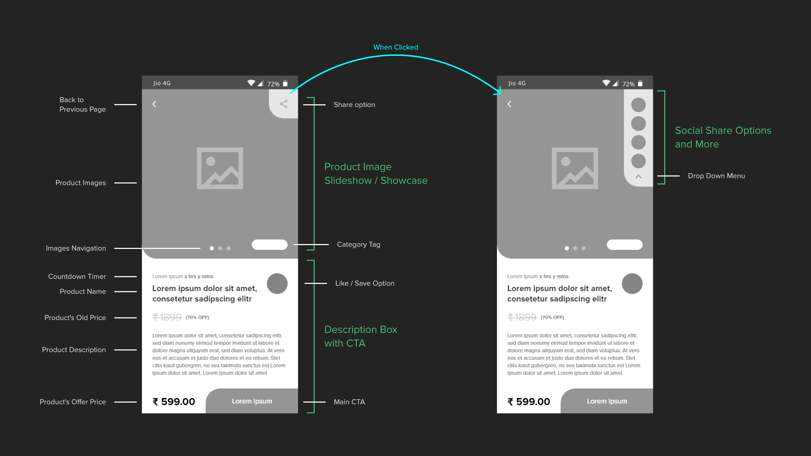
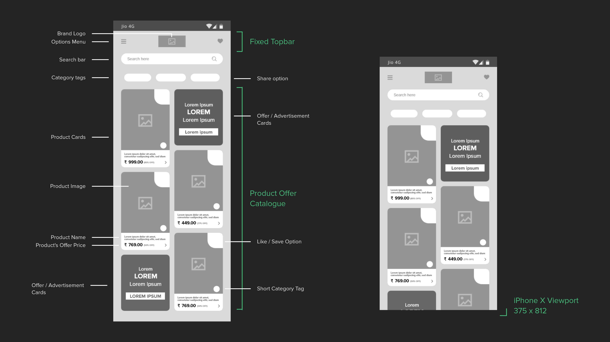
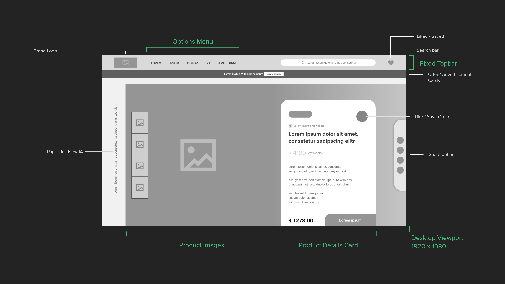

Case Study
(*9 +)
Contents
What is InsaneDeals
Team & Timeline
Business Objectives
Methodology
Exploration phase
User Personas
User Journey maps
Individualization
Design phase
Color palette & style
Product elements
Sitemap
Browsing convenience
Configuring Preferences
Desktop designs
Experiments
Referral system
Personalized design
Takeaways
Feedback
WHAT IS INSANEDEALS ?
'InsaneDeals' is an e-commerce project I worked on with Arbor Research. InsaneDeals strives to be the ultimate shopping concierge for prospective customers in a market flooded with different choices.
TEAM & OUTLINE
I joined the team as a UX Intern to help facilitate the design of the project. The 'InsaneDeals' project had a strict timeline and lasted for four intense weeks. Throughout the project, I worked directly with the Product Manager and collaborated with the copywriters, developers, and data research team.
BUSINESS OBJECTIVES
“We bring the coolest bargains on the Internet to your mobile”
InsaneDeals wants to create an experience that users will love where they can find amazing deals and get customized deals at all major e-commerce stores. The main target market for them is 'price-obsessed' consumers who want great brands at insane prices, aged 16-30.
InsaneDeals wants to create an experience that users will love where they can find amazing deals and get customized deals at all major e-commerce stores. The main target market for them is 'price-obsessed' consumers who want great brands at insane prices, aged 16-30.
METHODOLOGY
Based on the goals and objectives, it was decided that 'Personalization' will be the key to the design. And working with it, we may further categorize personalization as :
-
Persona-Based Personalization
-
Personalization Based on the Customer Journey
-
Individual-Specific Personalization or Individualization
Now, we'll go through them one by one in the exploration phase.
EXPLORATION PHASE
-
Creating User PersonasI carried out several interviews with people from the target audience and discovered three main personas as the first phase of the product design process.Anita / College Student
Fashion is her passion, and she wants to stand out in the crowd. As a young adult, she has to save money to buy designer clothes and accessories. Price is a big deal to her.Rahul / iOS Developer
He earns an above-average salary. He's super tech-savvy. He always keeps up on the latest technology products. He surfs dozens of sites, looking for the best deals, before finalizing a purchase.Riya/ Sales Head
She isn’t particularly tech-savvy but uses the internet quite often. She mostly buys online to save time. She mostly looks out for classic and well-known brands for her shopping choices. -
Creating User Journey mapsWhen a project revolves around e-commerce, user experience research must focus on the journey, the customers take in preparing for, during, and after their online shopping experience. But here in this experience, we will be more focusing on the discovery/searching phase. As our product is here to help the user make a decision for their purchase. Based on the personas, I mapped out their hypothetical experiences through user journeys.
And here are the key takeaways from the User journey maps :-
I was able to identify and highlight the user problems.
-
I understood how they interacted with similar platforms.
-
I got to know what they expect from a similar platform.
-
I discovered some of their pain points and found out what they experienced at different stages of the shopping experience.
-
I compiled some ideas for solving some of the issues.
-
-
IndividualizationEven though personas and journey maps helped us reach the goal of personalization, they were all still focused on delivering content to a broad segment of users. If we want to provide tailored deals/offers based on customer's preferences, we can't just bucket them into such broad segments. Therefore, we must go for Individualization, a process that will truly personalize customer experiences in a manner that meets specific consumer expectations by simply personalizing to a single segment.
But how can we do that ?
As part of my collaboration with Arbor Research’s data team, I examined how the company would gather the data for individualization so that our content experiences are tailored to a segment of one, customized in real-time based on actions and preferences uniquely related to that individual’s identity.
And the answer was their machine learning models and artificial intelligence (AI) tools, which helped us to analyze all available content as well as real-time and historical signals in order to deliver the best deals and offers to each user.
DESIGN PHASE
After collecting all the insights from the exploration phase, I began designing the platform from scratch. I started with as basic as paper sketches, to interactive prototypes in this process.

-
Color palette and styleThe idea was to make the app, friendly and easy to use, so we used a minimal visual style with rounded corners, and subtle shadows to show the depth of clickable items throughout the UI design. We did some experiments with the usage of accent colors to follow a seamless visual style. Will be talking about it, later in the case study. Overall, the user interface design was centered on simplicity, intuitiveness, and readability as core issues of a positive user experience.
-
Product elements (Product card)We decided to have these key items in the product card :
-
Product name
-
Company name
-
Discounted Price
-
Original Price
-
Discount percentage (Offer)
-
User Rating
We iterated and tested around 8-10 different variants of product card designs and finally came up with one that can be reused in both the mobile app & the desktop platform.We added two more items to the card too :-
Source icon (logo of the e-commerce site from where the offer is)
-
A share icon (built-in share icon for each product card)
-
-
Browsing convenienceProblem
While testing our prototypes, we realized that the younger segment of our users found browsing through product photos very time-consuming.Solution
We changed the prototype of the product card design by adding a quick-view solution, a simple carousel that could be used to see all of the product's photos without opening it. -
Filter / SortA bottom bar was added showing filtering/sorting options for deals. It resizes to show further details about the available options for filter & sort. 'Sort' option included sorting by recommendations, pricing (high/low), and bets discounts. And 'Filter' option included filtering deals by brands, price range, colors, size, etc. (depending upon the searched product list)
-
Sign Up flowThe app leads users to the home page immediately when they install and open it without prompting them to create an account. And the platform lets them browse freely.
The users must sign up only if they like the product and want to get the deal. To speed up the process, we used one-tap signups (Google & Facebook).After signing up, the user has access to more features, such as :-
The ability to set custom alerts.
-
The option to like a product deal and save it.
-
Access to exclusive 'Insane Deals'.
-
-
Share OptionsWe designed an integrated share button right within the product card to speed up the sharing process. Pressing and holding the share button will bring up a list of social media sharing options, along with a 'more' button that launches the default sharing dialog of the OS. This works on the desktop platform too, with a hover interaction.
-
SitemapDivided the whole map into 3 parts :
-
Shopping
-
Customization
-
Miscellaneous
The homepage and the categories are grouped together. Notifications and settings reside in the customization group. And finally among the miscellaneous are FAQs, Terms and Conditions, Privacy Policies, Contact Info, etc. The IA of the mobile app was derived from this sitemap too. -
-
Configuring PreferencesThe app trains itself, whenever a user takes an action within the app. It can be as simple as searching a product, checking details of a product, or maybe a bit complex like moving back and forth between 2 products.
In order to improve the efficiency of the training process for deals suggestions, we need the users to provide some details themselves.
This could have been achieved through a survey; however, rather than making it an extensive and boring process, we proposed an approach that is simpler and quicker to use.
We created an intuitive page that enables users to submit their preferences for shopping categories, brands, etc. and hence trains the app to show better deals.
How did we simplify the training process?-
We ask users to choose a shopping category.
-
Below the category, we show logos of different brands, which vary from each other (in terms of product style, price range, etc.)
-
We ask the users to choose at least 3 brands from the list.
-
For added convenience, we included a brand search option too.
-
As soon as they select 1 brand, we add a few more brand options (similar to the one they have already selected)
-
This fast forwards the training process and also helps the user to set their preferences.
-
Since their choices got saved automatically, they can now go back to the homepage and get fresh new deals.
-
They can even return to this page anytime to add brands or change their preferences.
-

-
Desktop designsUsed the same visual direction and styles, to design the web app based on the desktop viewports. Added hover interactions for social share, and 'Get the deal' button for the product cards.
Experiments
There were a lot of ideas that passed around the product team and the clients but did not make it into the production phase. Some of them seemed promising with a few tweaks, so we decided to ideate and develop them as experimental concept designs that can be added to the production phase later down the line if required.
-
Referral system experimentThere was a proposal from the clients to implement an 'Insane Token' that would enable users to unlock deals & obtain additional discounts on certain products. And so here is an example of 2 screens for the referral flow between 2 users.
-
Product details page experimentWhile designing the product details page, we decided to create a customizable page for each product, with the help of the product color data that we are extracting from the product details. This will by having a visual continuity throughout the page. Let me show an example.
Our system was gathering color details for most of the products, and this may be a nice way of utilizing the product's individual colors.
If there's a product with no color data, we can create a color palette from the image and select the dominant color as the base for the color palette and use it to make a dynamic customized visual experience

TAKEAWAY
Within 4 weeks, we provided our clients with a vision about how exactly the app will work, its features, and what it will do to create a better user experience.
I really enjoyed working on this project, exploring shopping behaviors, getting to know how design influences user's choice, and especially as it was the first time I was so closely involved with the development and data team, understanding the foundations of training an ML model; selecting offers/deals for a user based on specific characteristics.
I really enjoyed working on this project, exploring shopping behaviors, getting to know how design influences user's choice, and especially as it was the first time I was so closely involved with the development and data team, understanding the foundations of training an ML model; selecting offers/deals for a user based on specific characteristics.
Feedback
" Druhin has the ability to take a 360-degree cognizance of any design requirement and quickly galvanize appropriate resources and responses... "
TUSHAR SETHI
founder, arbor research
Info
Website
insanedeals.com - under dev
Website
arborresearch.in
Timeline
Feb - mar ‘20
tools
Adobe XD
Protopie
Protopie
discipline
UI/UX Design
UX Research
UX Research
Contact
(*7 +)